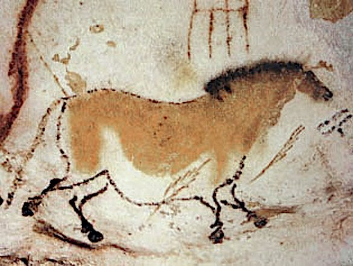
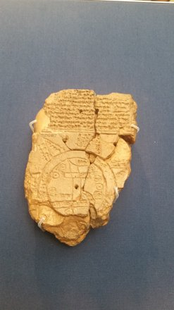
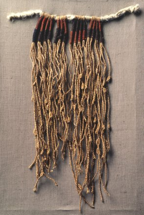
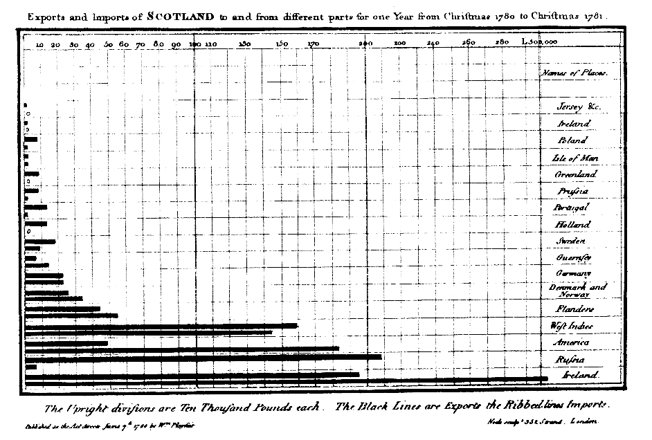
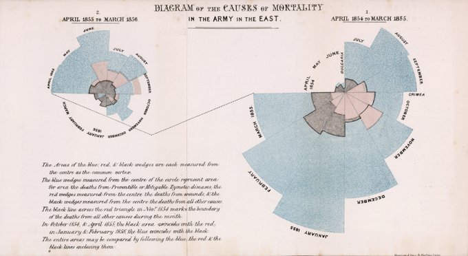
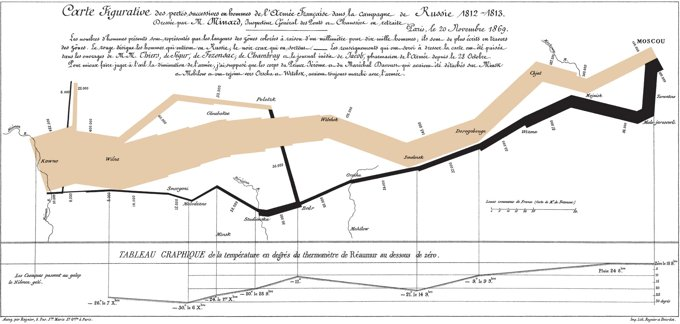
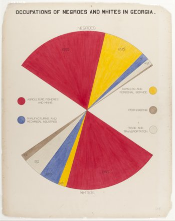

Class sections12
Introduction to Data Visualization
What data are and why we visualize them.
InstructorCarlos Elías Pérez
Making what we know visible
Before charts, we already looked for ways to share our experience.
Experience
Something we saw, did or need to remember.
Representation
A trace, a sign or an image that preserves part of that experience.
Reading
Another person interprets what they see through their own context and codes.
What does an image need to convey knowledge to another person?
Long before screens
Images, maps and objects to represent, guide and record.


Representing experience
Read this example
Animals and signs represent the world people experienced. We can see these images as traces of shared experience and knowledge. Their purpose and the meaning of each figure remain uncertain.
What can we recognize without knowing the creators’ code?
French Ministry of Culture · Image and record
Reproduction of a Lascaux painting. Public domain (PD-Art). Approximate date of the site, in calibrated years before present.


Ordering the world
Read this example
The tablet places locations around Babylon. Position and symbols show a way of understanding the world. A map also selects what to include and what to leave out.
What changes when a place occupies the centre?
British Museum · Image and record
Photograph: Shadsluiter, 2018. CC BY-SA 4.0. EXIF orientation preserved; image resized and converted to JPEG. The same licence is retained. CC BY-SA 4.0 licence.


Recording through relationships
Read this example
Cords, knots and positions record information. Many quipus encode quantities. Some meanings remain unresolved: we cannot read all their messages like a modern table.
Where is the information: in each knot or in their relationships?
Museo Chileno de Arte Precolombino · Image and record
MAS collection, Antwerp. CC0. The date refers to this object. Converted from TIFF to JPEG and resized.
Chronological selection · Approximate dates; spacing does not represent elapsed time.
When data take shape
Compare, explain and support an argument with evidence.


Comparing at a glance
Read this example
The bars compare Scotland’s imports and exports by country. Length reveals differences without reading a whole table. Published in 1786, the chart represents trade in 1780–1781.
Which comparison does length make immediate?
Library of Congress · Image and record
William Playfair, The Commercial and Political Atlas, 1786. Public domain. Converted from GIF to JPEG.


Making an urgent need visible
Read this example
Areas and colours compare mortality by month and cause. Blue highlights disease. The diagram supports an argument for better sanitation; alone, it does not show what caused a change.
What does area communicate, and what requires the legend?
David Rumsey Map Collection · Image and record
Florence Nightingale, 1858. British army data from the East, 1854–1856. Public domain. Resized reproduction.


Bringing evidence into a story
Read this example
Band width represents army troop numbers. Route, direction and temperature add context to the 1812 campaign. Loss becomes visible as the band narrows.
What does width tell us, and what does the map add?
Reproduction of the original chart · Image and record
Charles Joseph Minard, 1869. Public domain. Resized reproduction; the original temperature scale is preserved.


Challenging a viewpoint
Read this example
Du Bois and his team presented African American living conditions at the Paris Exposition. This chart compares their occupational distribution with that of Georgia’s white population. Data can also challenge a view of the world.
What reality does this comparison seek to reveal?
Library of Congress · Image and record
W. E. B. Du Bois and the Atlanta University team, 1900. Library of Congress: no known publication restrictions. Converted from TIFF to JPEG and resized.
Publication dates.
What data are and where they come from
Data are records of observations, measurements, responses or facts. They can be numbers, categories, text, images or sounds.
Ask
Surveys and interviewsWe collect responses about people’s experiences, opinions or characteristics.
Example: how people travel to work.
Observe and measure
Counts, sensors and GPSWe record quantities, environmental conditions, positions or routes.
Example: how many people cross a street.
Record activities
Records, transactions and systemsActivities leave records that we can reuse to answer other questions.
Example: an appointment, a purchase or a trip.
To interpret data, we need context: what they represent, who produced them, when and how.
Data also have structure
What does the dataset contain, and how do its parts relate?
Tables
Items and attributesEach row is an item; each column is a characteristic.
Example: districts and numbers of trees.
Networks
Nodes and linksThe data include items and the connections between them.
Example: stations and their connections.
Fields
Values in spaceA value varies over a continuous space. We can sample it on a grid.
Example: temperature across a territory.
Geometry
Positions and shapesThe location and shape of objects are part of the data.
Example: district boundaries.
Two variants: multidimensional tables and trees
Multiple keys
A multidimensional table combines keys, such as district and year, to locate a value.
A hierarchy
A tree is a hierarchical network with no cycles: for example, an organization and its units.
Illustrative diagrams, without real data. Based on Tamara Munzner, Visualization Analysis and Design (2014), ch. 2. Reference diagrams: Eamonn Maguire · CC BY 4.0.
Seeing quickly is not seeing everything
Our vision has an evolutionary history. It detects differences quickly, but attention and context limit what we see.
A difference stands out
Find the 7s. Then turn on colour.
Colour can guide attention before we read each number. Highlighting everything removes that advantage.
Context affects us
Which square looks lighter?
Both squares have the same grey. The background can change their appearance without changing their value.
Guide attention, compare with context and support colour with labels.
Evolution, limits and sources
Primate evolution includes changes in visual sensitivity. This helps explain our abilities, but not why we trust an image. Learning, expectations and the task also matter.
Some differences require little attention to detect; understanding a full scene requires selection and time. Vision is not an exact copy of the world, and it differs between people. Sound and touch also provide information: these demonstrations do not establish a universal ranking of the senses.
These are teaching demonstrations, not diagnostic tests. The effect depends on the screen and the viewer. The squares use the same colour value; only their backgrounds change.
Sources: Healey and Enns: perception and attention in visualization; Sinha and colleagues (2020): simultaneous contrast; Chi and colleagues (2025): sensory evolution in primates. Original diagrams.
What is data science?
It combines domain knowledge, statistics and programming to learn from data and support decisions.
Explore
Look for patterns, detect unusual values and formulate new questions.
What is happening in these data?
Communicate
Select findings and show their evidence and limits to an audience.
What does another person need to understand?
Original teaching diagram. References: IBM · Data science; R for Data Science · Process; NIST · Exploration.
Visualizing is not the same as telling a story
Visualization
Represent data through positions, sizes, shapes or colours to explore and communicate information.
The visual relationship must correspond to a relationship in the data.
Storytelling
Organize a sequence that connects a question, evidence and meaning for an audience.
Telling a story with data requires separating observation from interpretation.
- Question
Where do delays accumulate?
- Evidence
A has twice as many cases as B.
- Interpretation
A has more cases. We still need to find out why.
Designing for a task
A visualization is useful when it helps someone do something in a specific context.
The task focuses the design: does it reduce time, effort or errors? Does it reveal something? It can also help people learn, enjoy or become interested, beyond a business objective.
Analyze · Use
Consume informationDiscover
Find patterns we do not yet know.
Present
Communicate a finding to another person.
Enjoy
Explore through curiosity, interest or pleasure.
Analyze · Create
Produce informationAnnotate
Add an observation or label.
Record
Save a view or an analysis result.
Derive
Calculate new data from existing data.
Task = action + target. For example: compare + waiting times. The task guides what to show and how to evaluate whether the design works.
Taxonomy reference
Translated adaptation and vector diagrams recreated for this class from Tamara Munzner, chapter 3: task abstraction. Visual reference: Visualization Analysis and Design, Tamara Munzner, with illustrations by Eamonn Maguire. A K Peters Visualization Series, CRC Press, 2014, figure 3.1. Original diagrams under CC BY 4.0. Composition, colours and examples have been adapted. The diagrams show concepts, not results from a dataset.
Search and query
The action depends on what we already know and how much we need to examine.
Search
Do we know what we are looking for and where it is?
| Known target | Unknown target | |
|---|---|---|
| Location known | LookupLookup Read a category’s value in a known chart. | BrowseBrowse Examine a known chart to see what stands out. |
| Location unknown | LocateLocate Find a specific data item without knowing which chart contains it. | ExploreExplore Explore different charts without looking for a specific data item. |
Query data
Once we find them, what do we do with them?
Identify · One
Read an item’s value or characteristics.
Compare · Some
Recognize differences or similarities between items.
Summarize · All
Describe the dataset without inspecting every item.
Taxonomy reference
Translated adaptation and vector diagrams recreated for this class from Tamara Munzner, chapter 3: task abstraction. Visual reference: Visualization Analysis and Design, Tamara Munzner, with illustrations by Eamonn Maguire. A K Peters Visualization Series, CRC Press, 2014, figure 3.1. Original diagrams under CC BY 4.0. Composition, colours and examples have been adapted. The diagrams show concepts, not results from a dataset.
What we look for in data
The target is what we want to observe: a pattern, a value, a relationship or a structure.
Dataset
Any type of dataTrends
The overall direction of change.
Outliers
Cases that differ from the pattern.
Features
Notable peaks, changes or patterns.
Attributes
One variableDistribution
How values are spread.
Extremes
Minimum and maximum values.
Relationships
Multiple variablesDependency
How one value depends on another.
Correlation
How variables vary together; it does not prove causation.
Similarity
Which profiles are alike.
Structures
Networks and spatial dataTopology · Network
Who connects to whom.
Paths · Network
Which route connects two nodes.
Shape · Space
Outlines and geometry.
For example: “Compare the distribution of waiting times across specialties” combines an action with a target. This combination guides chart selection.
Taxonomy reference
Translated adaptation and vector diagrams recreated for this class from Tamara Munzner, chapter 3: task abstraction. Visual reference: Visualization Analysis and Design, Tamara Munzner, with illustrations by Eamonn Maguire. A K Peters Visualization Series, CRC Press, 2014, figure 3.1. Original diagrams under CC BY 4.0. Composition, colours and examples have been adapted. The diagrams show concepts, not results from a dataset.